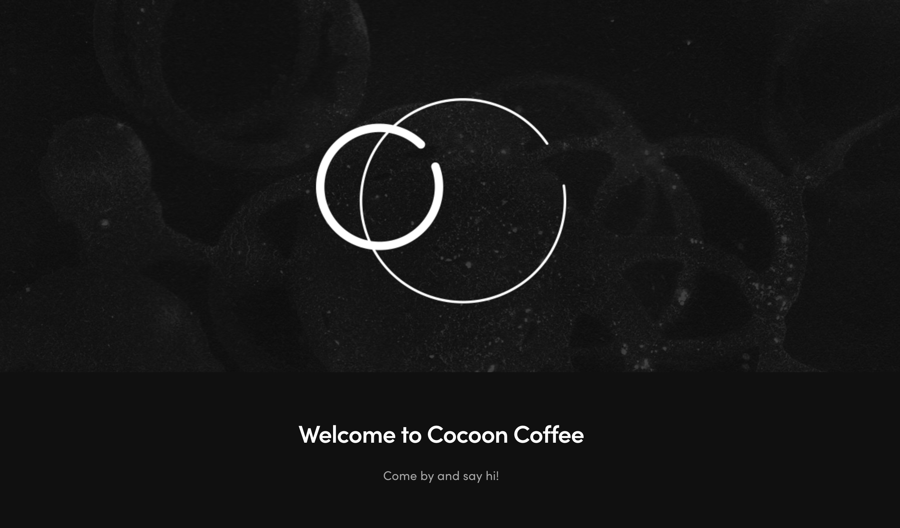
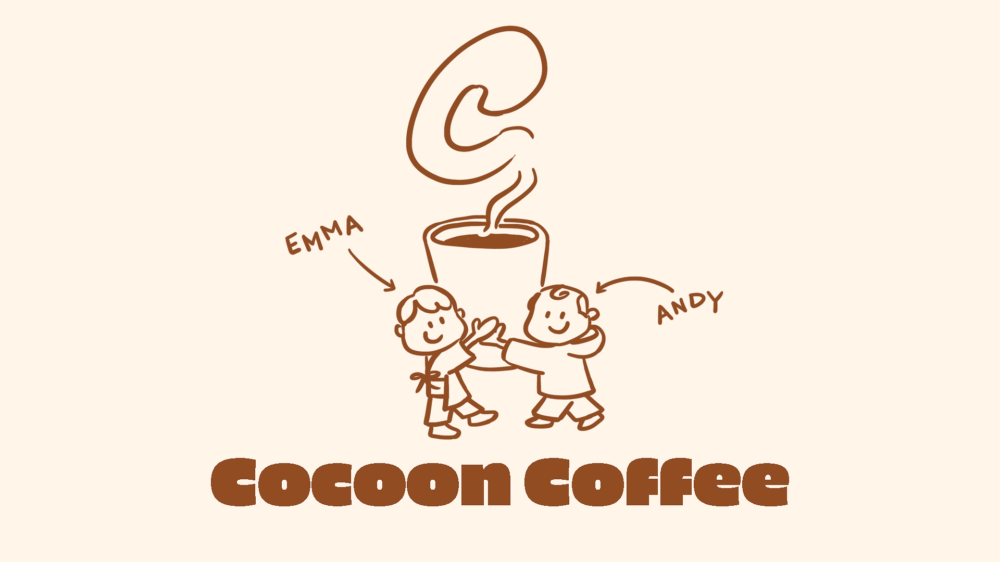
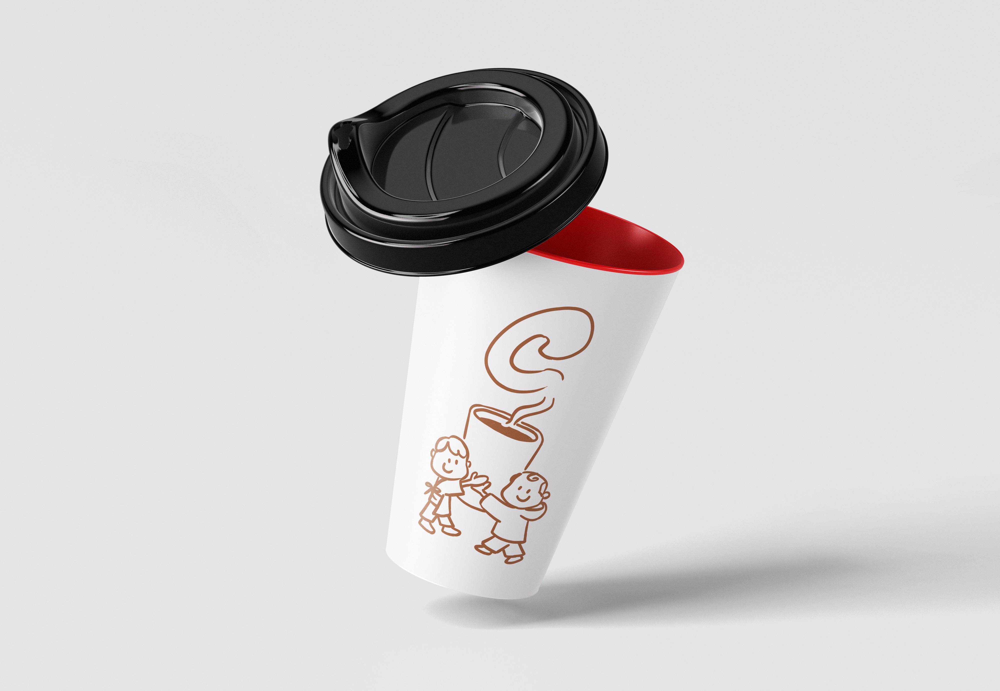
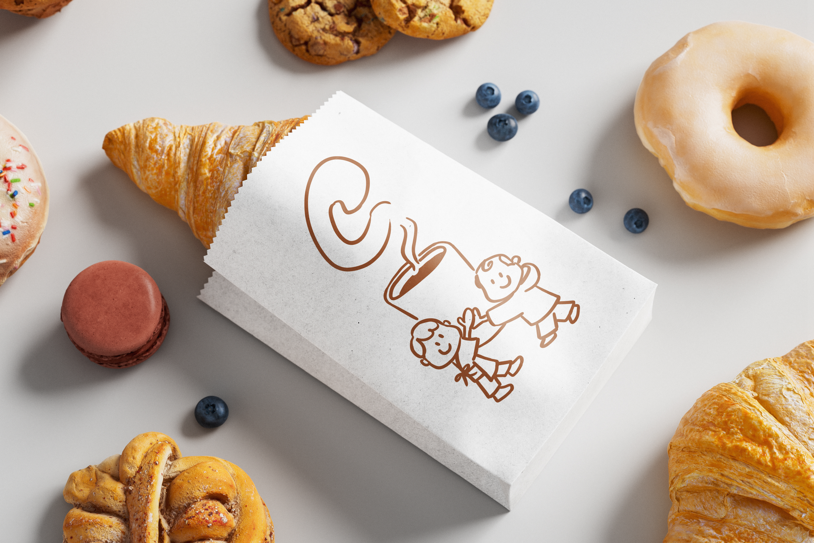
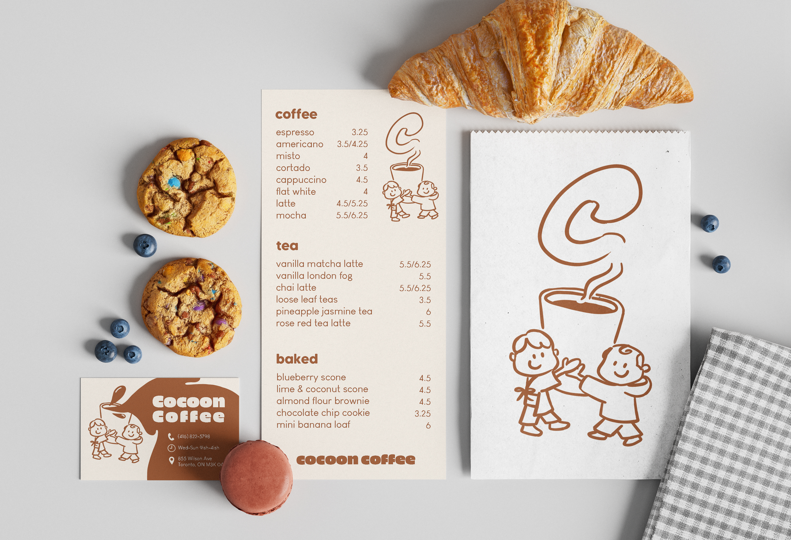

I chose my favourite local cafe and rebranded their business.
Tools: Adobe Photoshop, Wacom Intuos Pro Tablet

before

after
This assignment was called Damn I Wish I Made that. I was tasked with taking inspiration from an artist or designer, and creating something based on their work or style. I chose to take inspiration from @artsbyemdee - a freelance graphic designer based in Tokyo, Japan. She specializes in brand and packaging design. A lot of her brand designs consist of a combination of these beautiful line illustrations and a font that fits the brand. I selected this designer because I really like the way she balances typography with these pastel-like drawings.
Cocoon Coffee is a cafe near my house in North York, owned by a lovely Chinese couple named Emma and Andy.
I wanted to create a brand design that matched Emma's adorable and bubbly personality. I chose to change the colour palette away from black and white to brown and beige to represent the coffee and baked goods they sell. I explored different font styles, but I kept the same rounded font idea as I felt that it matched the new logo illustration.
I re-designed Cocoon Coffee's cups, baked goods bags, business card, and their menu using free mockup design files from mockups-design.com. The smoke coming from the coffee is supposed to take the shape of a "C", standing for Cocoon Coffee.



1. Creating clean mockups
I learned how to create clean mockups using online resources and was able to continue enhancing my Photoshop skills.
2. Exploring design style
By taking inspiration from another designer and through multiple iterations, I was able to explore what my own branding design style could be.